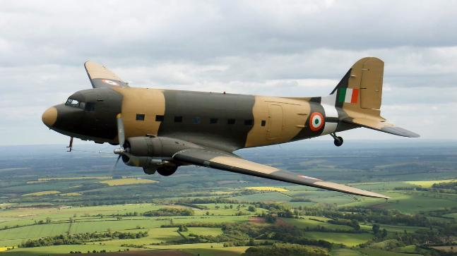

Service History
- Entry into service :
The DC-3 Dakota entered IAF service in 1947, shortly after India gained independence.
Originally designed as a civilian airliner, the DC-3 was repurposed for military use during World War II and was then transferred to air forces around the world, including India’s.
- Mjaor Operation :
The Dakota saw action during the 1947-48 Indo-Pak War (especially in Jammu and Kashmir operations),
1962 Sino-Indian War, 1965 Indo-Pak War, and the 1971 Indo-Pak War. It was crucial for transporting troops, supplies, and medical evacuations, particularly in remote areas and conflict zones.
- Retirement :
Although the Dakota was officially retired from the IAF in 1971, a few aircraft were maintained for ceremonial
purposes and historical flights. Due to its robust design and reliability, it served well beyond typical retirement timelines and remains one of the most iconic aircraft in Indian military aviation history.
Technical Specifications
- Weight : Approximately 8 tons (empty weight).
- Engine : Powered by two Pratt & Whitney R-1830 Twin Wasp radial engines, each producing 1,200 horsepower.
- Speed : Capable of speeds up to 346 km/h (215 mph).
- Armament : The Dakota was unarmed and designed strictly as a transport aircraft for personnel, cargo, and paratroopers.
-
Capacity : Capable of carrying up to 28 fully-equipped troops or approximately 3,400 kg of cargo.
- Notable Feature : Known for its excellent low-speed handling, the Dakota could operate from short and rugged airstrips, making it ideal for mountainous terrains and remote regions.
- Range : Operational range of around 2,400 km.
- Crew : Typically operated by a crew of three – pilot, co-pilot, and loadmaster.
Historical Significance
The DC-3 Dakota played a foundational role in shaping the IAF’s airlift and logistics capabilities, especially in India’s early years. It was essential for transporting supplies to troops stationed
in inaccessible regions, including the high-altitude areas of Jammu and Kashmir and Ladakh. The Dakota’s role during the Kashmir operations of 1947-48, where it helped airlift troops and supplies
to Srinagar in record time, cemented its legacy in Indian military history.
Notable Missions
- 1947-48 Indo-Pak War: The Dakota famously airlifted troops to Srinagar at a critical moment during the conflict, enabling India to defend the region against advancing forces.
This was one of the first uses of airlifted troops in modern warfare and is remembered as a defining moment in India’s early military operations.
- 1962 Sino-Indian War: The Dakota provided crucial logistical support in the remote mountainous regions of the northeastern frontier. It transported troops, weapons, and supplies under difficult flying conditions, helping sustain Indian forces.
- Humanitarian and Medical Evacuation Missions: Beyond wartime, the Dakota was frequently used in humanitarian operations, particularly for medical evacuations and relief supply drops during natural disasters in remote regions.